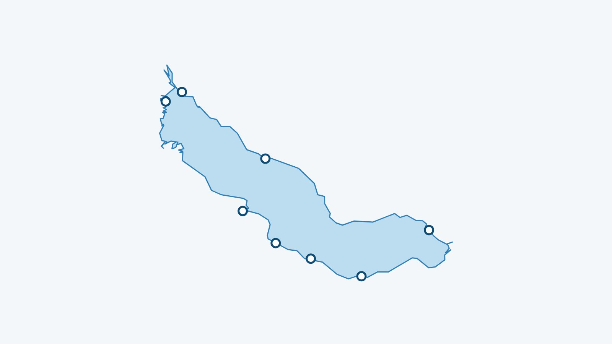

In breve
Il mio lago mostra la temperatura dell’acqua del lago di Thun a 70 cm sotto la superficie, aggiornata ogni tre ore dal modello Alplakes dell’Eawag. Per questo lago il modello fornisce un solo valore per tutto il lago: le 8 spiagge seguite mostrano la stessa cifra.
Da dove viene la temperatura del lago di Thun?
I dati provengono da Alplakes, la piattaforma dell’Eawag (l’istituto di ricerca sull’acqua del settore dei politecnici federali). Combina modelli numerici dei laghi e dati satellitari per calcolare la temperatura dell’acqua a diverse profondità. I dati sono pubblicati con licenza CC BY 4.0 e Il mio lago li rilegge ogni tre ore.
Per questo lago Alplakes fornisce un modello unidimensionale (Simstrat): calcola la temperatura secondo la profondità, ma non secondo il luogo. Il mio lago legge il valore a 70 cm di profondità e lo mostra per tutte le spiagge del lago.
La temperatura è la stessa su tutte le spiagge?
Nell’app sì, perché il modello dà un solo valore per il lago. Nella realtà non per forza: vicino a una foce, in una baia poco profonda o dopo vento forte, l’acqua può scostarsi dalla cifra mostrata. Va letta come la temperatura d’insieme del lago, non come una misura fatta sulla tua spiaggia.
Perché 70 cm sotto la superficie?
Perché è più o meno l’acqua in cui si nuota. Il primissimo strato cambia molto in fretta con il sole e l’aria; poco più sotto il valore è più stabile e più vicino a ciò che si sente entrando.
Le 8 spiagge seguite
Ogni spiaggia ha la sua pagina, con acqua, vento e un giudizio per il bagno e il paddle.

- Thoune – Strandbad
- Hünibach
- Spiez
- Faulensee
- Krattigen – Lido
- Leissigen
- Strandbad Hirschen
- Neuhaus (Unterseen)
Dove vedere la temperatura del lago di Thun in diretta?
Nell’app Il mio lago, gratuita e senza account. L’elenco di tutte le spiagge copre anche gli altri laghi svizzeri.
L’acqua del lago di Thun in questo momento
La temperatura dell’acqua di ogni spiaggia è nell’app Il mio lago, aggiornata ogni tre ore.